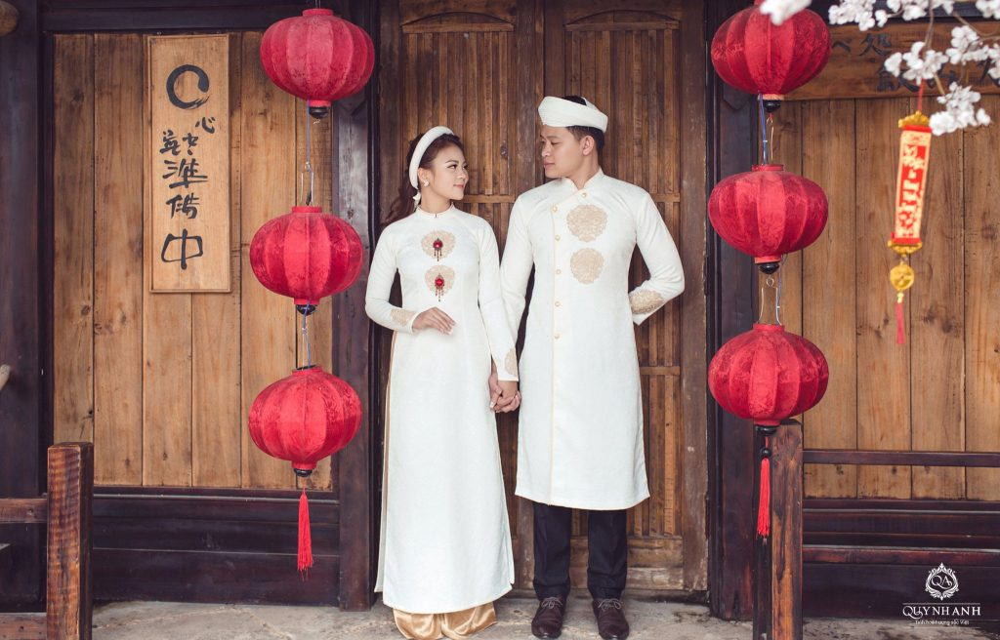
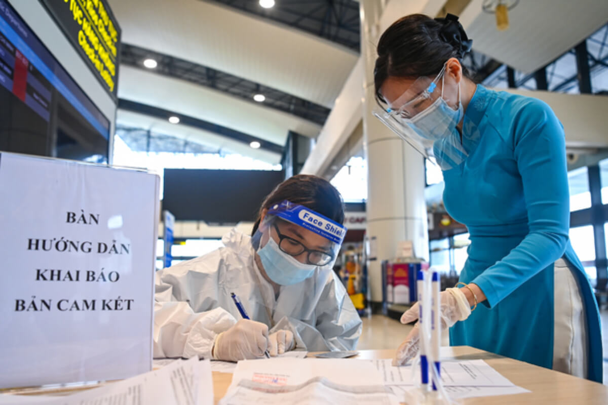

-
ベトナムの民族衣装「アオザイ」をご存知でしょうか？

アオザイは色鮮やかでスレンダーなスタイルのベトナムの民族衣装であり、華やかであることから憧れる女性の方も多いかもしれません。ベトナム航空の客室乗務員も着用していることから、見たことがある方も多いはず。 実は、ベトナムにはアオザイ専門店がたくさんあり、既製品の購入はもちろん、オーダーメイドで自分だけの一枚を作ることもできます。また、アオザイは女性用というイメージが強いですが、男性用のアオザイもあります。ここではアオザイの歴史、体験や撮影ができるお店、値段などを詳しく紹介します‼
-
ベトナムの伝統衣装「アオザイ」
「アオザイ」とはベトナムの伝統民族衣装です。アオザイはサイドにスリットが入った長いドレスに長ズボンと組み合わせたベトナム人女性の美のシンボルとして知られます。 アオザイはベトナム語では「Ao Dai」と表記します。これは「衣」という意味の「Ao」と「長い」という意味の「Dai」が組み合わさった「長い衣」という意味です。現在、ベトナム航空の客室乗務員の制服になっていることもあり、アオザイを目にしたことがある方も多いかもしれません。

-
アオザイを目で楽しむ

アオザイの楽しみ方は様々ですが、まずはアオザイを眺めて衣装の美しさを楽しみましょう。「アオザイ博物館」でアオザイの歴史に触れながらたくさんの美しいアオザイの展示を見るのは着るのとまた違った楽しさがあります。
-
アオザイはいつ着るもの？
アオザイを着るタイミングはいつなのでしょうか？ ベトナムでは、街を歩いているとアオザイを着ている女性をよく見かけます。他の国々よりも伝統衣装が着られる頻度が多いようです。学校や銀行や郵便局などの職場の制服としても使用されています。学校の制服として着用されるアオザイの色は白色であることが多いです。
また、結婚式や卒業式、旧正月などのイベントでもアオザイを着用する女性も少なくありません。アオザイを着ながらバイクに乗っている女性も多く、アオザイは普段着としても気軽に着ることができます。
アオザイには実は男性用もある⁉
アオザイは女性が着ている姿を目にする機会が多いため、「アオザイは女性が着るもの」というイメージが強いかもしれません。しかし、実は男性用のアオザイもあるんです‼ 街のお店に売っているのは女性用のアオザイがメインですが、お店や市場によっては男性用のアオザイを取り扱っているところもあります。
また、男性用のアオザイのオーダーメイドを受け付けているお店もあります。現在はベトナム人男性の多くはフォーマルな場面でスーツを着ることが多いですが、もちろん伝統衣装であるアオザイを着る方もいます。お土産として購入する男性観光客もちらほらいます。
-
まとめ
アオザイは美しいスレンダーな形、華やかなデザインであることから注目が集まっている民族衣装です。ベトナムに訪れた際にはアオザイの着用体験をして記念にスタジオで写真を撮るのもいいかもしれません。アオザイを着ていつもとは違った気分で街を歩いてみませんか？
-
問い合わせ

-

ベトナム：感染者3513人、前日から999人減 10日発表
-

バリア・ブンタウ省：社会隔離を緩和、経済活動再開へ
-

ブンタウロードトリップ〜ホーチミンから2時間で海へ行こう！〜
-
移動緩和は他省と調整、ホーチミン副市長
-

ＨＣＭ市、配達員のコロナ検査頻度緩めず